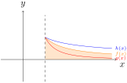

Let \(c>1\), compute: \[\int_1^c\frac{1}{x}dx\ \ \ \ \int_1^c\frac{1}{x^2}dx\ \ \ \ \int_1^c\frac{1}{\sqrt{x}}dx.\]
Then for each, take the limit as \(c\) tends to infinity. Which of these limits are defined?
Let \(0 < c < 1\), compute: \[\int_c^1\frac{1}{x}dx\ \ \ \ \int_c^1\frac{1}{x^2}dx\ \ \ \ \int_c^1\frac{1}{\sqrt{x}}dx.\]
Then for each, take the limit as \(c\) tends to zero from the right. Which of these limits are defined?
For a function \(f(x)\) defined for each \(x\) greater than some \(a\), we define the improper integral \(\displaystyle \int_a^\infty f(x)dx\) as \[\int_a^\infty f(x)dx:=\lim_{c\to \infty}\int_a^c f(x)dx.\] If an improper integral has a defined value, we say it is convergent, otherwise it is divergent.
We define \(\displaystyle \int_{-\infty}^a f(x)dx\) similarly.
How might we define \(\displaystyle \int_{-\infty}^\infty f(x)dx\)?
Find \[\int_0^\infty e^{-x}dx\]
Find \[\int_0^\infty xe^{-x}dx\ \ \int_0^\infty x^2e^{-x}dx\ \ \int_0^\infty x^3e^{-x}dx\] (use parts and the previous step(s))
What do you think is the value of this integral \[\int_0^\infty x^ne^{-x}dx?\]
Find \[\int_{-\infty}^\infty \frac{1}{1+x^2}dx\]
Find \[\int_{2}^\infty \frac{1}{\sqrt{x+2}}dx\]
Consider \[\int_0^1 \frac{1}{x}dx\] how might we define this?
For a function \(f(x)\) defined for each \(x\) greater than some \(a\), but not continuous at \(a\), we define the improper integral \(\displaystyle \int_a^b f(x)dx\) as \[\int_a^b f(x)dx:=\lim_{c\to a^+}\int_c^b f(x)dx\] for \(b>a\). If an improper integral has a defined value, we say it is convergent, otherwise it is divergent.
What should be the left analogue?
Find \[\int_{7\pi/7}^{3\pi/2} \tan(x)dx\]
Find \[\int_{0}^e \ln(x)dx\]
Without computing anything, is \(\displaystyle \int_1^\infty 3dx\) convergent?
What about \(\displaystyle \int_1^\infty \frac{x+4}{x}dx\)?
Suppose \(0 < p, p\neq 1 \) what is \(\displaystyle \int \frac{dx}{x^p}\)?
For what values is \(\displaystyle \int_1^\infty \frac{dx}{x^p} \) convergent?
For what values is \(\displaystyle \int_0^1 \frac{dx}{x^p} \) convergent?
What about \(p=1\)?
Suppose \(0< g(x)< f(x)< h(x) \) and \(\displaystyle \int_a^\infty f(x)dx \) is convergent. What can be said about \(\displaystyle \int_a^\infty g(x)dx\)?
A) Must be convergent. \(\ \) B) Must be divergent. \(\ \ \) C)Could be either convergent or divergent.
Suppose \(0< g(x)< f(x)< h(x) \) and \(\displaystyle \int_a^\infty f(x)dx \) is convergent. What can be said about \(\displaystyle \int_a^\infty h(x)dx\)?
A) Must be convergent. \(\ \) B) Must be divergent. \(\ \ \) C)Could be either convergent or divergent.
Suppose \(0< g(x)< f(x)< h(x) \) and \(\displaystyle \int_1^a f(x)dx \) is convergent. What can be said about \(\displaystyle \int_1^a g(x)dx\)?
A) Must be convergent.
B) Must be divergent.
C) Could be either convergent or divergent.
Suppose \(0< g(x)< f(x)< h(x) \) and \(\displaystyle \int_1^a f(x)dx \) is convergent. What can be said about \(\displaystyle \int_1^a h(x)dx\)?
A) Must be convergent.
B) Must be divergent.
C) Could be either convergent or divergent.
Suppose \(0< g(x)< f(x)< h(x) \) and \(\displaystyle \int_a^\infty f(x)dx \) is divergent. What can be said about \(\displaystyle \int_a^\infty g(x)dx\)?
A) Must be convergent. \(\ \) B) Must be divergent. \(\ \ \) C)Could be either convergent or divergent.
Suppose \(0< g(x)< f(x)< h(x) \) and \(\displaystyle \int_a^\infty f(x)dx \) is divergent. What can be said about \(\displaystyle \int_a^\infty h(x)dx\)?
A) Must be convergent. \(\ \) B) Must be divergent. \(\ \ \) C)Could be either convergent or divergent.
Suppose \(0< g(x)< f(x)< h(x) \) and \(\displaystyle \int_1^a f(x)dx \) is divergent. What can be said about \(\displaystyle \int_1^a g(x)dx\)?
A) Must be convergent.
B) Must be divergent.
C) Could be either convergent or divergent.
Suppose \(0< g(x)< f(x)< h(x) \) and \(\displaystyle \int_1^a f(x)dx \) is divergent. What can be said about \(\displaystyle \int_1^a h(x)dx\)?
A) Must be convergent.
B) Must be divergent.
C) Could be either convergent or divergent.
Without computing integrals, which converge and which diverge?